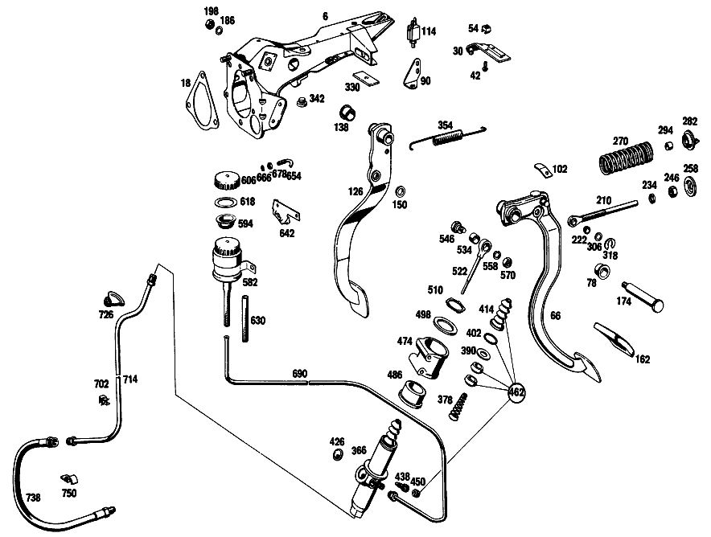

| № | Артикул | Название | Кол. | Примечание | Ограничение |
|---|---|---|---|---|---|
| 6 | A 108 290 03 31 | ПОДШИПНИК | 1 | Рулевое управление: ВлевоКоробка передач [002] 016 FROM CHASSIS 027623 ALSO INSTALLED ON, SEE FOOTNOTE 34; 018 FROM CHASSIS 028986 ALSO INSTALLED ON, SEE FOOTNOTE 35; 019 FROM CHASSIS 029326 [034] 026411, 026486, 026494, 026966, 026980, 026988, 027081, 027147, 027489, 027490, 027492, 027496, 027497, 027499- 027501, 027504- 027518, 027520- 027537, 027539- 027553, 027555- 027557, 027559, 027561- 027567, 027569, 027570, 027572- 027576, 027578- 027588, 027590- 027597, 027599- 027621. [035] 027638, 027756, 027764, 027992, 028237, 028251, 028290, 028666, 028675, 028677, 028682- 028684, 028687- 028691, 028693, 028700- 028703, 028707- 028713, 028715- 028718, 028720, 028722, 028724- 028726, 028729, 028730, 028732- 028735, 028737, 028738, 028742- 028744, 028748- 028751, 028754- 028761, 028764, 028768- 028770, 028772, 028774, 028775, 028777, 028780- 028785, 028789- 028793, 028795, 028798, 028798, 028800, 028801, 028804, 028805, 028807- 028809, 028811- 028823, 028826, 028827, 028829- 028833, 028835- 028838, 028841, 028844- 028850, 028868, 028870, 028872- 028875, 028877, 028880- 028885, 028891- 028898, 028900- 028905, 028907, 028909- 028940, 028942, 028944- 028947, 028949- 028974, 028974, 028976- 028978, 028983. | |
| 18 | A 108 431 00 80 | ПРОКЛАДКА УПЛОТНИТЕЛЬНАЯ | 1 | [001] 016 UP TO CHASSIS 027622 EXCEPT FOR, SEE FOOTNOTE 34; 018 UP TO CHASSIS 028985 EXCEPT FOR, SEE FOOTNOTE 35; 019 UP TO CHASSIS 029325 [034] 026411, 026486, 026494, 026966, 026980, 026988, 027081, 027147, 027489, 027490, 027492, 027496, 027497, 027499- 027501, 027504- 027518, 027520- 027537, 027539- 027553, 027555- 027557, 027559, 027561- 027567, 027569, 027570, 027572- 027576, 027578- 027588, 027590- 027597, 027599- 027621. [035] 027638, 027756, 027764, 027992, 028237, 028251, 028290, 028666, 028675, 028677, 028682- 028684, 028687- 028691, 028693, 028700- 028703, 028707- 028713, 028715- 028718, 028720, 028722, 028724- 028726, 028729, 028730, 028732- 028735, 028737, 028738, 028742- 028744, 028748- 028751, 028754- 028761, 028764, 028768- 028770, 028772, 028774, 028775, 028777, 028780- 028785, 028789- 028793, 028795, 028798, 028798, 028800, 028801, 028804, 028805, 028807- 028809, 028811- 028823, 028826, 028827, 028829- 028833, 028835- 028838, 028841, 028844- 028850, 028868, 028870, 028872- 028875, 028877, 028880- 028885, 028891- 028898, 028900- 028905, 028907, 028909- 028940, 028942, 028944- 028947, 028949- 028974, 028974, 028976- 028978, 028983. | |
| 30 | A 108 260 01 62 | ДЕРЖАТЕЛЬ | 1 | Рулевое управление: ВлевоАвтоматическая коробка переключения передач [001] 016 UP TO CHASSIS 027622 EXCEPT FOR, SEE FOOTNOTE 34; 018 UP TO CHASSIS 028985 EXCEPT FOR, SEE FOOTNOTE 35; 019 UP TO CHASSIS 029325 [034] 026411, 026486, 026494, 026966, 026980, 026988, 027081, 027147, 027489, 027490, 027492, 027496, 027497, 027499- 027501, 027504- 027518, 027520- 027537, 027539- 027553, 027555- 027557, 027559, 027561- 027567, 027569, 027570, 027572- 027576, 027578- 027588, 027590- 027597, 027599- 027621. [035] 027638, 027756, 027764, 027992, 028237, 028251, 028290, 028666, 028675, 028677, 028682- 028684, 028687- 028691, 028693, 028700- 028703, 028707- 028713, 028715- 028718, 028720, 028722, 028724- 028726, 028729, 028730, 028732- 028735, 028737, 028738, 028742- 028744, 028748- 028751, 028754- 028761, 028764, 028768- 028770, 028772, 028774, 028775, 028777, 028780- 028785, 028789- 028793, 028795, 028798, 028798, 028800, 028801, 028804, 028805, 028807- 028809, 028811- 028823, 028826, 028827, 028829- 028833, 028835- 028838, 028841, 028844- 028850, 028868, 028870, 028872- 028875, 028877, 028880- 028885, 028891- 028898, 028900- 028905, 028907, 028909- 028940, 028942, 028944- 028947, 028949- 028974, 028974, 028976- 028978, 028983. | |
| 42 | N 007981 002325 | Шуруп | 1 | Рулевое управление: ВлевоАвтоматическая коробка переключения передач [001] 016 UP TO CHASSIS 027622 EXCEPT FOR, SEE FOOTNOTE 34; 018 UP TO CHASSIS 028985 EXCEPT FOR, SEE FOOTNOTE 35; 019 UP TO CHASSIS 029325 [034] 026411, 026486, 026494, 026966, 026980, 026988, 027081, 027147, 027489, 027490, 027492, 027496, 027497, 027499- 027501, 027504- 027518, 027520- 027537, 027539- 027553, 027555- 027557, 027559, 027561- 027567, 027569, 027570, 027572- 027576, 027578- 027588, 027590- 027597, 027599- 027621. [035] 027638, 027756, 027764, 027992, 028237, 028251, 028290, 028666, 028675, 028677, 028682- 028684, 028687- 028691, 028693, 028700- 028703, 028707- 028713, 028715- 028718, 028720, 028722, 028724- 028726, 028729, 028730, 028732- 028735, 028737, 028738, 028742- 028744, 028748- 028751, 028754- 028761, 028764, 028768- 028770, 028772, 028774, 028775, 028777, 028780- 028785, 028789- 028793, 028795, 028798, 028798, 028800, 028801, 028804, 028805, 028807- 028809, 028811- 028823, 028826, 028827, 028829- 028833, 028835- 028838, 028841, 028844- 028850, 028868, 028870, 028872- 028875, 028877, 028880- 028885, 028891- 028898, 028900- 028905, 028907, 028909- 028940, 028942, 028944- 028947, 028949- 028974, 028974, 028976- 028978, 028983. | |
| 54 | A 000 990 27 91 | ГАЙКОДЕРЖАТЕЛЬ | - | ||
| 54 | A 000 990 22 91 | ГАЙКОДЕРЖАТЕЛЬ | 2 | [402] БОЛЬШЕ НЕ ПОСТАВЛЯЕТСЯ [415] ПРИМЕЧ. ПО ЗАМЕНЕ ПРИМЕНИМО ТОЛЬКО ДЛЯ СТОЯЩИХ РЯДОМ ПОЗИЦИЙ | |
| 66 | A 110 290 52 16 | ПЕДАЛЬ | 1 | Рулевое управление: ВлевоКоробка передач [001] 016 UP TO CHASSIS 027622 EXCEPT FOR, SEE FOOTNOTE 34; 018 UP TO CHASSIS 028985 EXCEPT FOR, SEE FOOTNOTE 35; 019 UP TO CHASSIS 029325 [034] 026411, 026486, 026494, 026966, 026980, 026988, 027081, 027147, 027489, 027490, 027492, 027496, 027497, 027499- 027501, 027504- 027518, 027520- 027537, 027539- 027553, 027555- 027557, 027559, 027561- 027567, 027569, 027570, 027572- 027576, 027578- 027588, 027590- 027597, 027599- 027621. [035] 027638, 027756, 027764, 027992, 028237, 028251, 028290, 028666, 028675, 028677, 028682- 028684, 028687- 028691, 028693, 028700- 028703, 028707- 028713, 028715- 028718, 028720, 028722, 028724- 028726, 028729, 028730, 028732- 028735, 028737, 028738, 028742- 028744, 028748- 028751, 028754- 028761, 028764, 028768- 028770, 028772, 028774, 028775, 028777, 028780- 028785, 028789- 028793, 028795, 028798, 028798, 028800, 028801, 028804, 028805, 028807- 028809, 028811- 028823, 028826, 028827, 028829- 028833, 028835- 028838, 028841, 028844- 028850, 028868, 028870, 028872- 028875, 028877, 028880- 028885, 028891- 028898, 028900- 028905, 028907, 028909- 028940, 028942, 028944- 028947, 028949- 028974, 028974, 028976- 028978, 028983. | |
| 78 | A 110 291 05 50 | - Втулка подшипника | - | Рулевое управление: ВлевоКоробка передач | |
| 78 | A 124 292 00 50 | - Втулка подшипника | 2 | Рулевое управление: ВлевоКоробка передач | |
| 90 | A 108 545 17 40 | ДЕРЖАТЕЛЬ | 1 | Рулевое управление: ВлевоКоробка передач | |
| 102 | A 108 545 02 87 | УПОР | 1 | Рулевое управление: ВлевоКоробка передач [027] 018 FROM CHASSIS 028986 ALSO INSTALLED ON, SEE FOOTNOTE 35; 019 FROM CHASSIS 029326 [035] 027638, 027756, 027764, 027992, 028237, 028251, 028290, 028666, 028675, 028677, 028682- 028684, 028687- 028691, 028693, 028700- 028703, 028707- 028713, 028715- 028718, 028720, 028722, 028724- 028726, 028729, 028730, 028732- 028735, 028737, 028738, 028742- 028744, 028748- 028751, 028754- 028761, 028764, 028768- 028770, 028772, 028774, 028775, 028777, 028780- 028785, 028789- 028793, 028795, 028798, 028798, 028800, 028801, 028804, 028805, 028807- 028809, 028811- 028823, 028826, 028827, 028829- 028833, 028835- 028838, 028841, 028844- 028850, 028868, 028870, 028872- 028875, 028877, 028880- 028885, 028891- 028898, 028900- 028905, 028907, 028909- 028940, 028942, 028944- 028947, 028949- 028974, 028974, 028976- 028978, 028983. | |
| 114 | A 000 545 84 11 | ВЫКЛЮЧАТЕЛЬ | - | Рулевое управление: ВлевоКоробка передач | |
| 114 | A 004 545 04 14 | Переключатель | - | Рулевое управление: ВлевоКоробка передач | |
| 114 | A 004 545 18 14 | Переключатель | 1 | Рулевое управление: ВлевоКоробка передач | |
| 126 | A 110 290 35 18 | ПЕДАЛЬ | 1 | [001] 016 UP TO CHASSIS 027622 EXCEPT FOR, SEE FOOTNOTE 34; 018 UP TO CHASSIS 028985 EXCEPT FOR, SEE FOOTNOTE 35; 019 UP TO CHASSIS 029325 [034] 026411, 026486, 026494, 026966, 026980, 026988, 027081, 027147, 027489, 027490, 027492, 027496, 027497, 027499- 027501, 027504- 027518, 027520- 027537, 027539- 027553, 027555- 027557, 027559, 027561- 027567, 027569, 027570, 027572- 027576, 027578- 027588, 027590- 027597, 027599- 027621. [035] 027638, 027756, 027764, 027992, 028237, 028251, 028290, 028666, 028675, 028677, 028682- 028684, 028687- 028691, 028693, 028700- 028703, 028707- 028713, 028715- 028718, 028720, 028722, 028724- 028726, 028729, 028730, 028732- 028735, 028737, 028738, 028742- 028744, 028748- 028751, 028754- 028761, 028764, 028768- 028770, 028772, 028774, 028775, 028777, 028780- 028785, 028789- 028793, 028795, 028798, 028798, 028800, 028801, 028804, 028805, 028807- 028809, 028811- 028823, 028826, 028827, 028829- 028833, 028835- 028838, 028841, 028844- 028850, 028868, 028870, 028872- 028875, 028877, 028880- 028885, 028891- 028898, 028900- 028905, 028907, 028909- 028940, 028942, 028944- 028947, 028949- 028974, 028974, 028976- 028978, 028983. | |
| 138 | A 110 291 05 50 | - Втулка подшипника | - | ||
| 138 | A 124 292 00 50 | - Втулка подшипника | 2 | ||
| 150 | A 110 292 01 50 | - втулка | 2 | ||
| 162 | A 107 291 01 82 | Чехол | 2 | Рулевое управление: ВлевоКоробка передач | |
| 162 | A 107 291 01 82 | Чехол | 1 | Рулевое управление: ВлевоАвтоматическая коробка переключения передач | |
| 174 | A 110 291 06 74 | БОЛТ | 1 | Рулевое управление: ВлевоКоробка передач [001] 016 UP TO CHASSIS 027622 EXCEPT FOR, SEE FOOTNOTE 34; 018 UP TO CHASSIS 028985 EXCEPT FOR, SEE FOOTNOTE 35; 019 UP TO CHASSIS 029325 [034] 026411, 026486, 026494, 026966, 026980, 026988, 027081, 027147, 027489, 027490, 027492, 027496, 027497, 027499- 027501, 027504- 027518, 027520- 027537, 027539- 027553, 027555- 027557, 027559, 027561- 027567, 027569, 027570, 027572- 027576, 027578- 027588, 027590- 027597, 027599- 027621. [035] 027638, 027756, 027764, 027992, 028237, 028251, 028290, 028666, 028675, 028677, 028682- 028684, 028687- 028691, 028693, 028700- 028703, 028707- 028713, 028715- 028718, 028720, 028722, 028724- 028726, 028729, 028730, 028732- 028735, 028737, 028738, 028742- 028744, 028748- 028751, 028754- 028761, 028764, 028768- 028770, 028772, 028774, 028775, 028777, 028780- 028785, 028789- 028793, 028795, 028798, 028798, 028800, 028801, 028804, 028805, 028807- 028809, 028811- 028823, 028826, 028827, 028829- 028833, 028835- 028838, 028841, 028844- 028850, 028868, 028870, 028872- 028875, 028877, 028880- 028885, 028891- 028898, 028900- 028905, 028907, 028909- 028940, 028942, 028944- 028947, 028949- 028974, 028974, 028976- 028978, 028983. | |
| 186 | N 000127 010202 | Пружинное кольцо | 1 | ПЕДАЛЬ НА КРОНШТЕЙНЕ | |
| 198 | N 000936 010003 | ГАЙКА | 1 | ПЕДАЛЬ НА КРОНШТЕЙНЕ | |
| 222 | A 110 291 07 50 | - втулка | 2 | Рулевое управление: ВлевоКоробка передач | |
| 234 | N 007967 010001 | Гайка | 1 | Рулевое управление: ВлевоКоробка передач [402] БОЛЬШЕ НЕ ПОСТАВЛЯЕТСЯ | |
| 246 | N 070615 010004 | Гайка | 1 | Рулевое управление: ВлевоКоробка передач [402] БОЛЬШЕ НЕ ПОСТАВЛЯЕТСЯ | |
| 258 | A 111 291 04 91 | Тарелка пружины | 1 | Рулевое управление: ВлевоКоробка передач | |
| 282 | A 107 291 00 91 | Тарелка пружины | 1 | Рулевое управление: ВлевоКоробка передач | |
| 294 | A 107 291 00 91 | - Тарелка пружины | 1 | Рулевое управление: ВлевоКоробка передач | |
| 306 | A 110 990 17 40 | ШАЙБА | 1 | Рулевое управление: ВлевоКоробка передач [001] 016 UP TO CHASSIS 027622 EXCEPT FOR, SEE FOOTNOTE 34; 018 UP TO CHASSIS 028985 EXCEPT FOR, SEE FOOTNOTE 35; 019 UP TO CHASSIS 029325 [034] 026411, 026486, 026494, 026966, 026980, 026988, 027081, 027147, 027489, 027490, 027492, 027496, 027497, 027499- 027501, 027504- 027518, 027520- 027537, 027539- 027553, 027555- 027557, 027559, 027561- 027567, 027569, 027570, 027572- 027576, 027578- 027588, 027590- 027597, 027599- 027621. [035] 027638, 027756, 027764, 027992, 028237, 028251, 028290, 028666, 028675, 028677, 028682- 028684, 028687- 028691, 028693, 028700- 028703, 028707- 028713, 028715- 028718, 028720, 028722, 028724- 028726, 028729, 028730, 028732- 028735, 028737, 028738, 028742- 028744, 028748- 028751, 028754- 028761, 028764, 028768- 028770, 028772, 028774, 028775, 028777, 028780- 028785, 028789- 028793, 028795, 028798, 028798, 028800, 028801, 028804, 028805, 028807- 028809, 028811- 028823, 028826, 028827, 028829- 028833, 028835- 028838, 028841, 028844- 028850, 028868, 028870, 028872- 028875, 028877, 028880- 028885, 028891- 028898, 028900- 028905, 028907, 028909- 028940, 028942, 028944- 028947, 028949- 028974, 028974, 028976- 028978, 028983. | |
| 318 | A 000 994 04 10 | ПРЕДОХРАНИТЕЛЬ | 1 | Рулевое управление: ВлевоКоробка передач [001] 016 UP TO CHASSIS 027622 EXCEPT FOR, SEE FOOTNOTE 34; 018 UP TO CHASSIS 028985 EXCEPT FOR, SEE FOOTNOTE 35; 019 UP TO CHASSIS 029325 [034] 026411, 026486, 026494, 026966, 026980, 026988, 027081, 027147, 027489, 027490, 027492, 027496, 027497, 027499- 027501, 027504- 027518, 027520- 027537, 027539- 027553, 027555- 027557, 027559, 027561- 027567, 027569, 027570, 027572- 027576, 027578- 027588, 027590- 027597, 027599- 027621. [035] 027638, 027756, 027764, 027992, 028237, 028251, 028290, 028666, 028675, 028677, 028682- 028684, 028687- 028691, 028693, 028700- 028703, 028707- 028713, 028715- 028718, 028720, 028722, 028724- 028726, 028729, 028730, 028732- 028735, 028737, 028738, 028742- 028744, 028748- 028751, 028754- 028761, 028764, 028768- 028770, 028772, 028774, 028775, 028777, 028780- 028785, 028789- 028793, 028795, 028798, 028798, 028800, 028801, 028804, 028805, 028807- 028809, 028811- 028823, 028826, 028827, 028829- 028833, 028835- 028838, 028841, 028844- 028850, 028868, 028870, 028872- 028875, 028877, 028880- 028885, 028891- 028898, 028900- 028905, 028907, 028909- 028940, 028942, 028944- 028947, 028949- 028974, 028974, 028976- 028978, 028983. | |
| 330 | A 111 462 00 75 | ШАЙБА | - | 2.0 MM [402] БОЛЬШЕ НЕ ПОСТАВЛЯЕТСЯ | |
| 342 | A 111 291 00 86 | Упор | 1 | ||
| 354 | A 107 993 04 10 | пружина | 1 | Рулевое управление: ВлевоКоробка передач | |
| 402 | A 000 994 33 35 | - Пружинное кольцо | 1 | Рулевое управление: ВлевоКоробка передач | |
| 414 | A 000 295 15 83 | - Защитный колпачок | 1 | Рулевое управление: ВлевоКоробка передач | |
| 438 | A 000 420 10 55 | - Клапан выпуска воздуха | 1 | Рулевое управление: ВлевоКоробка передач | |
| 450 | A 000 421 71 87 | - КОЛПАЧОК | - | Рулевое управление: ВлевоКоробка передач | |
| 450 | A 000 421 08 87 | - Защитный колпачок | 1 | Рулевое управление: ВлевоКоробка передач | |
| 486 | A 108 295 00 50 | Упорное кольцо | 2 | ||
| 498 | A 108 295 00 76 | Диск | 1 | ||
| 510 | A 001 994 32 41 | ПРЕДОХРАНИТЕЛЬ | 1 | ||
| 522 | A 110 290 18 39 | Тяга привода | 1 | ||
| 534 | A 110 295 02 50 | - Втулка подшипника | 1 | ||
| 546 | A 094 295 01 00 | болт | - | ||
| 546 | A 115 295 01 72 | Эксцентриковая гайка | 1 | ||
| 558 | N 000127 008200 | КОЛЬЦО ПРУЖИННОЕ | 1 | ||
| 570 | N 000936 008003 | ГАЙКА | 1 | ||
| 642 | A 115 295 09 40 | ДЕРЖАТЕЛЬ | 1 | Рулевое управление: ВлевоКоробка передач | |
| 654 | A 108 295 01 24 | БОЛТ НАТЯЖНОЙ | 2 | Рулевое управление: ВлевоКоробка передач | |
| 666 | A 094 990 68 10 | Пружинное кольцо | 2 | Рулевое управление: ВлевоКоробка передач | |
| 678 | N 000934 006007 | Гайка | 2 | Рулевое управление: ВлевоКоробка передач | |
| 690 | A 108 290 07 13 | ПРОВОД | - | Рулевое управление: ВлевоКоробка передач | |
| 690 | A 113 290 17 13 | ПРОВОД | 1 | Рулевое управление: ВлевоКоробка передач | |
| 702 | A 003 988 03 78 | Скоба | 1 | Рулевое управление: ВлевоКоробка передач | |
| 714 | A 110 290 30 13 | ПРОВОД | 1 | Рулевое управление: ВлевоКоробка передач [001] 016 UP TO CHASSIS 027622 EXCEPT FOR, SEE FOOTNOTE 34; 018 UP TO CHASSIS 028985 EXCEPT FOR, SEE FOOTNOTE 35; 019 UP TO CHASSIS 029325 [034] 026411, 026486, 026494, 026966, 026980, 026988, 027081, 027147, 027489, 027490, 027492, 027496, 027497, 027499- 027501, 027504- 027518, 027520- 027537, 027539- 027553, 027555- 027557, 027559, 027561- 027567, 027569, 027570, 027572- 027576, 027578- 027588, 027590- 027597, 027599- 027621. [035] 027638, 027756, 027764, 027992, 028237, 028251, 028290, 028666, 028675, 028677, 028682- 028684, 028687- 028691, 028693, 028700- 028703, 028707- 028713, 028715- 028718, 028720, 028722, 028724- 028726, 028729, 028730, 028732- 028735, 028737, 028738, 028742- 028744, 028748- 028751, 028754- 028761, 028764, 028768- 028770, 028772, 028774, 028775, 028777, 028780- 028785, 028789- 028793, 028795, 028798, 028798, 028800, 028801, 028804, 028805, 028807- 028809, 028811- 028823, 028826, 028827, 028829- 028833, 028835- 028838, 028841, 028844- 028850, 028868, 028870, 028872- 028875, 028877, 028880- 028885, 028891- 028898, 028900- 028905, 028907, 028909- 028940, 028942, 028944- 028947, 028949- 028974, 028974, 028976- 028978, 028983. | |
| 726 | A 007 997 58 81 | втулка | 1 | Рулевое управление: ВлевоКоробка передач | |
| 738 | A 000 295 05 35 | Шланг сцепления | 1 | Рулевое управление: ВлевоКоробка передач [001] 016 UP TO CHASSIS 027622 EXCEPT FOR, SEE FOOTNOTE 34; 018 UP TO CHASSIS 028985 EXCEPT FOR, SEE FOOTNOTE 35; 019 UP TO CHASSIS 029325 [034] 026411, 026486, 026494, 026966, 026980, 026988, 027081, 027147, 027489, 027490, 027492, 027496, 027497, 027499- 027501, 027504- 027518, 027520- 027537, 027539- 027553, 027555- 027557, 027559, 027561- 027567, 027569, 027570, 027572- 027576, 027578- 027588, 027590- 027597, 027599- 027621. [035] 027638, 027756, 027764, 027992, 028237, 028251, 028290, 028666, 028675, 028677, 028682- 028684, 028687- 028691, 028693, 028700- 028703, 028707- 028713, 028715- 028718, 028720, 028722, 028724- 028726, 028729, 028730, 028732- 028735, 028737, 028738, 028742- 028744, 028748- 028751, 028754- 028761, 028764, 028768- 028770, 028772, 028774, 028775, 028777, 028780- 028785, 028789- 028793, 028795, 028798, 028798, 028800, 028801, 028804, 028805, 028807- 028809, 028811- 028823, 028826, 028827, 028829- 028833, 028835- 028838, 028841, 028844- 028850, 028868, 028870, 028872- 028875, 028877, 028880- 028885, 028891- 028898, 028900- 028905, 028907, 028909- 028940, 028942, 028944- 028947, 028949- 028974, 028974, 028976- 028978, 028983. | |
| 750 | N 072571 001034 | Хомут | 1 | ||
| A 108 290 00 31 | ПОДШИПНИК | 1 | Рулевое управление: ВлевоКоробка передач [001] 016 UP TO CHASSIS 027622 EXCEPT FOR, SEE FOOTNOTE 34; 018 UP TO CHASSIS 028985 EXCEPT FOR, SEE FOOTNOTE 35; 019 UP TO CHASSIS 029325 [034] 026411, 026486, 026494, 026966, 026980, 026988, 027081, 027147, 027489, 027490, 027492, 027496, 027497, 027499- 027501, 027504- 027518, 027520- 027537, 027539- 027553, 027555- 027557, 027559, 027561- 027567, 027569, 027570, 027572- 027576, 027578- 027588, 027590- 027597, 027599- 027621. [035] 027638, 027756, 027764, 027992, 028237, 028251, 028290, 028666, 028675, 028677, 028682- 028684, 028687- 028691, 028693, 028700- 028703, 028707- 028713, 028715- 028718, 028720, 028722, 028724- 028726, 028729, 028730, 028732- 028735, 028737, 028738, 028742- 028744, 028748- 028751, 028754- 028761, 028764, 028768- 028770, 028772, 028774, 028775, 028777, 028780- 028785, 028789- 028793, 028795, 028798, 028798, 028800, 028801, 028804, 028805, 028807- 028809, 028811- 028823, 028826, 028827, 028829- 028833, 028835- 028838, 028841, 028844- 028850, 028868, 028870, 028872- 028875, 028877, 028880- 028885, 028891- 028898, 028900- 028905, 028907, 028909- 028940, 028942, 028944- 028947, 028949- 028974, 028974, 028976- 028978, 028983. | ||
| A 109 290 00 31 | ПОДШИПНИК | 1 | Рулевое управление: ВлевоАвтоматическая коробка переключения передач [001] 016 UP TO CHASSIS 027622 EXCEPT FOR, SEE FOOTNOTE 34; 018 UP TO CHASSIS 028985 EXCEPT FOR, SEE FOOTNOTE 35; 019 UP TO CHASSIS 029325 [034] 026411, 026486, 026494, 026966, 026980, 026988, 027081, 027147, 027489, 027490, 027492, 027496, 027497, 027499- 027501, 027504- 027518, 027520- 027537, 027539- 027553, 027555- 027557, 027559, 027561- 027567, 027569, 027570, 027572- 027576, 027578- 027588, 027590- 027597, 027599- 027621. [035] 027638, 027756, 027764, 027992, 028237, 028251, 028290, 028666, 028675, 028677, 028682- 028684, 028687- 028691, 028693, 028700- 028703, 028707- 028713, 028715- 028718, 028720, 028722, 028724- 028726, 028729, 028730, 028732- 028735, 028737, 028738, 028742- 028744, 028748- 028751, 028754- 028761, 028764, 028768- 028770, 028772, 028774, 028775, 028777, 028780- 028785, 028789- 028793, 028795, 028798, 028798, 028800, 028801, 028804, 028805, 028807- 028809, 028811- 028823, 028826, 028827, 028829- 028833, 028835- 028838, 028841, 028844- 028850, 028868, 028870, 028872- 028875, 028877, 028880- 028885, 028891- 028898, 028900- 028905, 028907, 028909- 028940, 028942, 028944- 028947, 028949- 028974, 028974, 028976- 028978, 028983. | ||
| A 108 290 05 33 | ДЕРЖАТЕЛЬ | 1 | Рулевое управление: ВлевоАвтоматическая коробка переключения передач [002] 016 FROM CHASSIS 027623 ALSO INSTALLED ON, SEE FOOTNOTE 34; 018 FROM CHASSIS 028986 ALSO INSTALLED ON, SEE FOOTNOTE 35; 019 FROM CHASSIS 029326 [034] 026411, 026486, 026494, 026966, 026980, 026988, 027081, 027147, 027489, 027490, 027492, 027496, 027497, 027499- 027501, 027504- 027518, 027520- 027537, 027539- 027553, 027555- 027557, 027559, 027561- 027567, 027569, 027570, 027572- 027576, 027578- 027588, 027590- 027597, 027599- 027621. [035] 027638, 027756, 027764, 027992, 028237, 028251, 028290, 028666, 028675, 028677, 028682- 028684, 028687- 028691, 028693, 028700- 028703, 028707- 028713, 028715- 028718, 028720, 028722, 028724- 028726, 028729, 028730, 028732- 028735, 028737, 028738, 028742- 028744, 028748- 028751, 028754- 028761, 028764, 028768- 028770, 028772, 028774, 028775, 028777, 028780- 028785, 028789- 028793, 028795, 028798, 028798, 028800, 028801, 028804, 028805, 028807- 028809, 028811- 028823, 028826, 028827, 028829- 028833, 028835- 028838, 028841, 028844- 028850, 028868, 028870, 028872- 028875, 028877, 028880- 028885, 028891- 028898, 028900- 028905, 028907, 028909- 028940, 028942, 028944- 028947, 028949- 028974, 028974, 028976- 028978, 028983. | ||
| A 108 431 01 80 | уплотнение | 1 | [002] 016 FROM CHASSIS 027623 ALSO INSTALLED ON, SEE FOOTNOTE 34; 018 FROM CHASSIS 028986 ALSO INSTALLED ON, SEE FOOTNOTE 35; 019 FROM CHASSIS 029326 [034] 026411, 026486, 026494, 026966, 026980, 026988, 027081, 027147, 027489, 027490, 027492, 027496, 027497, 027499- 027501, 027504- 027518, 027520- 027537, 027539- 027553, 027555- 027557, 027559, 027561- 027567, 027569, 027570, 027572- 027576, 027578- 027588, 027590- 027597, 027599- 027621. [035] 027638, 027756, 027764, 027992, 028237, 028251, 028290, 028666, 028675, 028677, 028682- 028684, 028687- 028691, 028693, 028700- 028703, 028707- 028713, 028715- 028718, 028720, 028722, 028724- 028726, 028729, 028730, 028732- 028735, 028737, 028738, 028742- 028744, 028748- 028751, 028754- 028761, 028764, 028768- 028770, 028772, 028774, 028775, 028777, 028780- 028785, 028789- 028793, 028795, 028798, 028798, 028800, 028801, 028804, 028805, 028807- 028809, 028811- 028823, 028826, 028827, 028829- 028833, 028835- 028838, 028841, 028844- 028850, 028868, 028870, 028872- 028875, 028877, 028880- 028885, 028891- 028898, 028900- 028905, 028907, 028909- 028940, 028942, 028944- 028947, 028949- 028974, 028974, 028976- 028978, 028983. | ||
| A 108 545 07 40 | ДЕРЖАТЕЛЬ | - | Рулевое управление: ВлевоКоробка передач | ||
| A 108 545 00 87 | УПОР | - | Рулевое управление: ВлевоКоробка передач [026] 018 UP TO CHASSIS 028985 EXCEPT FOR, SEE FOOTNOTE 35; 019 UP TO CHASSIS 029325 [035] 027638, 027756, 027764, 027992, 028237, 028251, 028290, 028666, 028675, 028677, 028682- 028684, 028687- 028691, 028693, 028700- 028703, 028707- 028713, 028715- 028718, 028720, 028722, 028724- 028726, 028729, 028730, 028732- 028735, 028737, 028738, 028742- 028744, 028748- 028751, 028754- 028761, 028764, 028768- 028770, 028772, 028774, 028775, 028777, 028780- 028785, 028789- 028793, 028795, 028798, 028798, 028800, 028801, 028804, 028805, 028807- 028809, 028811- 028823, 028826, 028827, 028829- 028833, 028835- 028838, 028841, 028844- 028850, 028868, 028870, 028872- 028875, 028877, 028880- 028885, 028891- 028898, 028900- 028905, 028907, 028909- 028940, 028942, 028944- 028947, 028949- 028974, 028974, 028976- 028978, 028983. | ||
| N 000931 006191 | Винт | 2 | STOP TO CLUTCH PEDAL Рулевое управление: ВлевоКоробка передач [026] 018 UP TO CHASSIS 028985 EXCEPT FOR, SEE FOOTNOTE 35; 019 UP TO CHASSIS 029325 [035] 027638, 027756, 027764, 027992, 028237, 028251, 028290, 028666, 028675, 028677, 028682- 028684, 028687- 028691, 028693, 028700- 028703, 028707- 028713, 028715- 028718, 028720, 028722, 028724- 028726, 028729, 028730, 028732- 028735, 028737, 028738, 028742- 028744, 028748- 028751, 028754- 028761, 028764, 028768- 028770, 028772, 028774, 028775, 028777, 028780- 028785, 028789- 028793, 028795, 028798, 028798, 028800, 028801, 028804, 028805, 028807- 028809, 028811- 028823, 028826, 028827, 028829- 028833, 028835- 028838, 028841, 028844- 028850, 028868, 028870, 028872- 028875, 028877, 028880- 028885, 028891- 028898, 028900- 028905, 028907, 028909- 028940, 028942, 028944- 028947, 028949- 028974, 028974, 028976- 028978, 028983. | ||
| N 000933 006102 | Винт | - | Рулевое управление: ВлевоКоробка передач | ||
| N 304017 006016 | Винт с 6-гранной головкой | 1 | STOP TO CLUTCH PEDAL; M6X16 Рулевое управление: ВлевоКоробка передач [027] 018 FROM CHASSIS 028986 ALSO INSTALLED ON, SEE FOOTNOTE 35; 019 FROM CHASSIS 029326 [035] 027638, 027756, 027764, 027992, 028237, 028251, 028290, 028666, 028675, 028677, 028682- 028684, 028687- 028691, 028693, 028700- 028703, 028707- 028713, 028715- 028718, 028720, 028722, 028724- 028726, 028729, 028730, 028732- 028735, 028737, 028738, 028742- 028744, 028748- 028751, 028754- 028761, 028764, 028768- 028770, 028772, 028774, 028775, 028777, 028780- 028785, 028789- 028793, 028795, 028798, 028798, 028800, 028801, 028804, 028805, 028807- 028809, 028811- 028823, 028826, 028827, 028829- 028833, 028835- 028838, 028841, 028844- 028850, 028868, 028870, 028872- 028875, 028877, 028880- 028885, 028891- 028898, 028900- 028905, 028907, 028909- 028940, 028942, 028944- 028947, 028949- 028974, 028974, 028976- 028978, 028983. | ||
| N 000934 006007 | Гайка | 1 | STOP TO CLUTCH PEDAL Рулевое управление: ВлевоКоробка передач | ||
| A 094 990 68 10 | Пружинное кольцо | 1 | STOP TO CLUTCH PEDAL Рулевое управление: ВлевоКоробка передач | ||
| N 006797 006145 | Зубчатая шайба | 1 | STOP TO CLUTCH PEDAL Рулевое управление: ВлевоКоробка передач | ||
| N 007976 004205 | Шуруп | 1 | КРОНШТЕЙН К ДЕРЖАТЕЛЮ Рулевое управление: ВлевоКоробка передач | ||
| A 108 290 00 18 | ПЕДАЛЬ | 1 | [002] 016 FROM CHASSIS 027623 ALSO INSTALLED ON, SEE FOOTNOTE 34; 018 FROM CHASSIS 028986 ALSO INSTALLED ON, SEE FOOTNOTE 35; 019 FROM CHASSIS 029326 [034] 026411, 026486, 026494, 026966, 026980, 026988, 027081, 027147, 027489, 027490, 027492, 027496, 027497, 027499- 027501, 027504- 027518, 027520- 027537, 027539- 027553, 027555- 027557, 027559, 027561- 027567, 027569, 027570, 027572- 027576, 027578- 027588, 027590- 027597, 027599- 027621. [035] 027638, 027756, 027764, 027992, 028237, 028251, 028290, 028666, 028675, 028677, 028682- 028684, 028687- 028691, 028693, 028700- 028703, 028707- 028713, 028715- 028718, 028720, 028722, 028724- 028726, 028729, 028730, 028732- 028735, 028737, 028738, 028742- 028744, 028748- 028751, 028754- 028761, 028764, 028768- 028770, 028772, 028774, 028775, 028777, 028780- 028785, 028789- 028793, 028795, 028798, 028798, 028800, 028801, 028804, 028805, 028807- 028809, 028811- 028823, 028826, 028827, 028829- 028833, 028835- 028838, 028841, 028844- 028850, 028868, 028870, 028872- 028875, 028877, 028880- 028885, 028891- 028898, 028900- 028905, 028907, 028909- 028940, 028942, 028944- 028947, 028949- 028974, 028974, 028976- 028978, 028983. | ||
| A 108 291 00 74 | БОЛТ | 1 | ПЕДАЛЬ НА КРОНШТЕЙНЕ Рулевое управление: ВлевоКоробка передач [002] 016 FROM CHASSIS 027623 ALSO INSTALLED ON, SEE FOOTNOTE 34; 018 FROM CHASSIS 028986 ALSO INSTALLED ON, SEE FOOTNOTE 35; 019 FROM CHASSIS 029326 [034] 026411, 026486, 026494, 026966, 026980, 026988, 027081, 027147, 027489, 027490, 027492, 027496, 027497, 027499- 027501, 027504- 027518, 027520- 027537, 027539- 027553, 027555- 027557, 027559, 027561- 027567, 027569, 027570, 027572- 027576, 027578- 027588, 027590- 027597, 027599- 027621. [035] 027638, 027756, 027764, 027992, 028237, 028251, 028290, 028666, 028675, 028677, 028682- 028684, 028687- 028691, 028693, 028700- 028703, 028707- 028713, 028715- 028718, 028720, 028722, 028724- 028726, 028729, 028730, 028732- 028735, 028737, 028738, 028742- 028744, 028748- 028751, 028754- 028761, 028764, 028768- 028770, 028772, 028774, 028775, 028777, 028780- 028785, 028789- 028793, 028795, 028798, 028798, 028800, 028801, 028804, 028805, 028807- 028809, 028811- 028823, 028826, 028827, 028829- 028833, 028835- 028838, 028841, 028844- 028850, 028868, 028870, 028872- 028875, 028877, 028880- 028885, 028891- 028898, 028900- 028905, 028907, 028909- 028940, 028942, 028944- 028947, 028949- 028974, 028974, 028976- 028978, 028983. | ||
| A 110 291 05 74 | БОЛТ | 1 | ПЕДАЛЬ НА КРОНШТЕЙНЕ Рулевое управление: ВлевоАвтоматическая коробка переключения передач | ||
| A 115 290 13 39 | ТЯГА | 1 | Рулевое управление: ВлевоКоробка передач | ||
| A 115 993 79 02 | Нажимная пружина | 1 | Рулевое управление: ВлевоКоробка передач | ||
| N 000125 008407 | ШАЙБА | 1 | Рулевое управление: ВлевоКоробка передач [002] 016 FROM CHASSIS 027623 ALSO INSTALLED ON, SEE FOOTNOTE 34; 018 FROM CHASSIS 028986 ALSO INSTALLED ON, SEE FOOTNOTE 35; 019 FROM CHASSIS 029326 [034] 026411, 026486, 026494, 026966, 026980, 026988, 027081, 027147, 027489, 027490, 027492, 027496, 027497, 027499- 027501, 027504- 027518, 027520- 027537, 027539- 027553, 027555- 027557, 027559, 027561- 027567, 027569, 027570, 027572- 027576, 027578- 027588, 027590- 027597, 027599- 027621. [035] 027638, 027756, 027764, 027992, 028237, 028251, 028290, 028666, 028675, 028677, 028682- 028684, 028687- 028691, 028693, 028700- 028703, 028707- 028713, 028715- 028718, 028720, 028722, 028724- 028726, 028729, 028730, 028732- 028735, 028737, 028738, 028742- 028744, 028748- 028751, 028754- 028761, 028764, 028768- 028770, 028772, 028774, 028775, 028777, 028780- 028785, 028789- 028793, 028795, 028798, 028798, 028800, 028801, 028804, 028805, 028807- 028809, 028811- 028823, 028826, 028827, 028829- 028833, 028835- 028838, 028841, 028844- 028850, 028868, 028870, 028872- 028875, 028877, 028880- 028885, 028891- 028898, 028900- 028905, 028907, 028909- 028940, 028942, 028944- 028947, 028949- 028974, 028974, 028976- 028978, 028983. | ||
| N 006799 006003 | Стопорная шайба | 1 | 6MM Рулевое управление: ВлевоКоробка передач [002] 016 FROM CHASSIS 027623 ALSO INSTALLED ON, SEE FOOTNOTE 34; 018 FROM CHASSIS 028986 ALSO INSTALLED ON, SEE FOOTNOTE 35; 019 FROM CHASSIS 029326 [034] 026411, 026486, 026494, 026966, 026980, 026988, 027081, 027147, 027489, 027490, 027492, 027496, 027497, 027499- 027501, 027504- 027518, 027520- 027537, 027539- 027553, 027555- 027557, 027559, 027561- 027567, 027569, 027570, 027572- 027576, 027578- 027588, 027590- 027597, 027599- 027621. [035] 027638, 027756, 027764, 027992, 028237, 028251, 028290, 028666, 028675, 028677, 028682- 028684, 028687- 028691, 028693, 028700- 028703, 028707- 028713, 028715- 028718, 028720, 028722, 028724- 028726, 028729, 028730, 028732- 028735, 028737, 028738, 028742- 028744, 028748- 028751, 028754- 028761, 028764, 028768- 028770, 028772, 028774, 028775, 028777, 028780- 028785, 028789- 028793, 028795, 028798, 028798, 028800, 028801, 028804, 028805, 028807- 028809, 028811- 028823, 028826, 028827, 028829- 028833, 028835- 028838, 028841, 028844- 028850, 028868, 028870, 028872- 028875, 028877, 028880- 028885, 028891- 028898, 028900- 028905, 028907, 028909- 028940, 028942, 028944- 028947, 028949- 028974, 028974, 028976- 028978, 028983. | ||
| N 000931 008099 | Винт | 1 | [001] 016 UP TO CHASSIS 027622 EXCEPT FOR, SEE FOOTNOTE 34; 018 UP TO CHASSIS 028985 EXCEPT FOR, SEE FOOTNOTE 35; 019 UP TO CHASSIS 029325 [034] 026411, 026486, 026494, 026966, 026980, 026988, 027081, 027147, 027489, 027490, 027492, 027496, 027497, 027499- 027501, 027504- 027518, 027520- 027537, 027539- 027553, 027555- 027557, 027559, 027561- 027567, 027569, 027570, 027572- 027576, 027578- 027588, 027590- 027597, 027599- 027621. [035] 027638, 027756, 027764, 027992, 028237, 028251, 028290, 028666, 028675, 028677, 028682- 028684, 028687- 028691, 028693, 028700- 028703, 028707- 028713, 028715- 028718, 028720, 028722, 028724- 028726, 028729, 028730, 028732- 028735, 028737, 028738, 028742- 028744, 028748- 028751, 028754- 028761, 028764, 028768- 028770, 028772, 028774, 028775, 028777, 028780- 028785, 028789- 028793, 028795, 028798, 028798, 028800, 028801, 028804, 028805, 028807- 028809, 028811- 028823, 028826, 028827, 028829- 028833, 028835- 028838, 028841, 028844- 028850, 028868, 028870, 028872- 028875, 028877, 028880- 028885, 028891- 028898, 028900- 028905, 028907, 028909- 028940, 028942, 028944- 028947, 028949- 028974, 028974, 028976- 028978, 028983. | ||
| N 000931 008173 | Винт | 1 | PEDAL ASSEMBLY TO CROSS MEMBER [002] 016 FROM CHASSIS 027623 ALSO INSTALLED ON, SEE FOOTNOTE 34; 018 FROM CHASSIS 028986 ALSO INSTALLED ON, SEE FOOTNOTE 35; 019 FROM CHASSIS 029326 [034] 026411, 026486, 026494, 026966, 026980, 026988, 027081, 027147, 027489, 027490, 027492, 027496, 027497, 027499- 027501, 027504- 027518, 027520- 027537, 027539- 027553, 027555- 027557, 027559, 027561- 027567, 027569, 027570, 027572- 027576, 027578- 027588, 027590- 027597, 027599- 027621. [035] 027638, 027756, 027764, 027992, 028237, 028251, 028290, 028666, 028675, 028677, 028682- 028684, 028687- 028691, 028693, 028700- 028703, 028707- 028713, 028715- 028718, 028720, 028722, 028724- 028726, 028729, 028730, 028732- 028735, 028737, 028738, 028742- 028744, 028748- 028751, 028754- 028761, 028764, 028768- 028770, 028772, 028774, 028775, 028777, 028780- 028785, 028789- 028793, 028795, 028798, 028798, 028800, 028801, 028804, 028805, 028807- 028809, 028811- 028823, 028826, 028827, 028829- 028833, 028835- 028838, 028841, 028844- 028850, 028868, 028870, 028872- 028875, 028877, 028880- 028885, 028891- 028898, 028900- 028905, 028907, 028909- 028940, 028942, 028944- 028947, 028949- 028974, 028974, 028976- 028978, 028983. | ||
| N 000433 008406 | Шайба | 1 | PEDAL ASSEMBLY TO CROSS MEMBER | ||
| N 000137 008204 | Пружинная шайба | 1 | PEDAL ASSEMBLY TO CROSS MEMBER | ||
| N 000934 008010 | Гайка | - | |||
| N 304032 008006 | Шестигранная гайка | 1 | PEDAL ASSEMBLY TO CROSS MEMBER; M8 | ||
| A 000 295 52 06 | Главный цилиндр | 1 | 3/4" X 34 MM Рулевое управление: ВлевоКоробка передач [001] 016 UP TO CHASSIS 027622 EXCEPT FOR, SEE FOOTNOTE 34; 018 UP TO CHASSIS 028985 EXCEPT FOR, SEE FOOTNOTE 35; 019 UP TO CHASSIS 029325 [034] 026411, 026486, 026494, 026966, 026980, 026988, 027081, 027147, 027489, 027490, 027492, 027496, 027497, 027499- 027501, 027504- 027518, 027520- 027537, 027539- 027553, 027555- 027557, 027559, 027561- 027567, 027569, 027570, 027572- 027576, 027578- 027588, 027590- 027597, 027599- 027621. [035] 027638, 027756, 027764, 027992, 028237, 028251, 028290, 028666, 028675, 028677, 028682- 028684, 028687- 028691, 028693, 028700- 028703, 028707- 028713, 028715- 028718, 028720, 028722, 028724- 028726, 028729, 028730, 028732- 028735, 028737, 028738, 028742- 028744, 028748- 028751, 028754- 028761, 028764, 028768- 028770, 028772, 028774, 028775, 028777, 028780- 028785, 028789- 028793, 028795, 028798, 028798, 028800, 028801, 028804, 028805, 028807- 028809, 028811- 028823, 028826, 028827, 028829- 028833, 028835- 028838, 028841, 028844- 028850, 028868, 028870, 028872- 028875, 028877, 028880- 028885, 028891- 028898, 028900- 028905, 028907, 028909- 028940, 028942, 028944- 028947, 028949- 028974, 028974, 028976- 028978, 028983. | ||
| A 000 295 78 06 | Главный цилиндр | 1 | 3/4" X 34 MM Рулевое управление: ВлевоКоробка передач [002] 016 FROM CHASSIS 027623 ALSO INSTALLED ON, SEE FOOTNOTE 34; 018 FROM CHASSIS 028986 ALSO INSTALLED ON, SEE FOOTNOTE 35; 019 FROM CHASSIS 029326 [034] 026411, 026486, 026494, 026966, 026980, 026988, 027081, 027147, 027489, 027490, 027492, 027496, 027497, 027499- 027501, 027504- 027518, 027520- 027537, 027539- 027553, 027555- 027557, 027559, 027561- 027567, 027569, 027570, 027572- 027576, 027578- 027588, 027590- 027597, 027599- 027621. [035] 027638, 027756, 027764, 027992, 028237, 028251, 028290, 028666, 028675, 028677, 028682- 028684, 028687- 028691, 028693, 028700- 028703, 028707- 028713, 028715- 028718, 028720, 028722, 028724- 028726, 028729, 028730, 028732- 028735, 028737, 028738, 028742- 028744, 028748- 028751, 028754- 028761, 028764, 028768- 028770, 028772, 028774, 028775, 028777, 028780- 028785, 028789- 028793, 028795, 028798, 028798, 028800, 028801, 028804, 028805, 028807- 028809, 028811- 028823, 028826, 028827, 028829- 028833, 028835- 028838, 028841, 028844- 028850, 028868, 028870, 028872- 028875, 028877, 028880- 028885, 028891- 028898, 028900- 028905, 028907, 028909- 028940, 028942, 028944- 028947, 028949- 028974, 028974, 028976- 028978, 028983. | ||
| A 000 586 15 29 | ремкомплект | 1 | [002] 016 FROM CHASSIS 027623 ALSO INSTALLED ON, SEE FOOTNOTE 34; 018 FROM CHASSIS 028986 ALSO INSTALLED ON, SEE FOOTNOTE 35; 019 FROM CHASSIS 029326 [034] 026411, 026486, 026494, 026966, 026980, 026988, 027081, 027147, 027489, 027490, 027492, 027496, 027497, 027499- 027501, 027504- 027518, 027520- 027537, 027539- 027553, 027555- 027557, 027559, 027561- 027567, 027569, 027570, 027572- 027576, 027578- 027588, 027590- 027597, 027599- 027621. [035] 027638, 027756, 027764, 027992, 028237, 028251, 028290, 028666, 028675, 028677, 028682- 028684, 028687- 028691, 028693, 028700- 028703, 028707- 028713, 028715- 028718, 028720, 028722, 028724- 028726, 028729, 028730, 028732- 028735, 028737, 028738, 028742- 028744, 028748- 028751, 028754- 028761, 028764, 028768- 028770, 028772, 028774, 028775, 028777, 028780- 028785, 028789- 028793, 028795, 028798, 028798, 028800, 028801, 028804, 028805, 028807- 028809, 028811- 028823, 028826, 028827, 028829- 028833, 028835- 028838, 028841, 028844- 028850, 028868, 028870, 028872- 028875, 028877, 028880- 028885, 028891- 028898, 028900- 028905, 028907, 028909- 028940, 028942, 028944- 028947, 028949- 028974, 028974, 028976- 028978, 028983. [030] 016 UP TO CHASSIS 088599; 018 UP TO CHASSIS 094097 | ||
| A 000 586 29 29 | ремкомплект | 1 | [029] TO CLUTCH MASTER CYLINDER 000 295 78 06 [031] 016 FROM CHASSIS 088600; 018 FROM CHASSIS 094098 | ||
| A 115 295 02 40 | ДЕРЖАТЕЛЬ | 1 | Рулевое управление: ВлевоКоробка передач | ||
| A 115 295 03 40 | Держатель | 1 | Рулевое управление: ВлевоКоробка передач | ||
| N 000931 006035 | БОЛТ | 2 | ГЛАВНЫЙ ЦИЛИНДР НА КРОНШТЕЙНЕ | ||
| N 000934 006007 | Гайка | 2 | ГЛАВНЫЙ ЦИЛИНДР НА КРОНШТЕЙНЕ | ||
| A 115 290 01 15 | БАЧОК | 1 | Рулевое управление: ВлевоКоробка передач [001] 016 UP TO CHASSIS 027622 EXCEPT FOR, SEE FOOTNOTE 34; 018 UP TO CHASSIS 028985 EXCEPT FOR, SEE FOOTNOTE 35; 019 UP TO CHASSIS 029325 [034] 026411, 026486, 026494, 026966, 026980, 026988, 027081, 027147, 027489, 027490, 027492, 027496, 027497, 027499- 027501, 027504- 027518, 027520- 027537, 027539- 027553, 027555- 027557, 027559, 027561- 027567, 027569, 027570, 027572- 027576, 027578- 027588, 027590- 027597, 027599- 027621. [035] 027638, 027756, 027764, 027992, 028237, 028251, 028290, 028666, 028675, 028677, 028682- 028684, 028687- 028691, 028693, 028700- 028703, 028707- 028713, 028715- 028718, 028720, 028722, 028724- 028726, 028729, 028730, 028732- 028735, 028737, 028738, 028742- 028744, 028748- 028751, 028754- 028761, 028764, 028768- 028770, 028772, 028774, 028775, 028777, 028780- 028785, 028789- 028793, 028795, 028798, 028798, 028800, 028801, 028804, 028805, 028807- 028809, 028811- 028823, 028826, 028827, 028829- 028833, 028835- 028838, 028841, 028844- 028850, 028868, 028870, 028872- 028875, 028877, 028880- 028885, 028891- 028898, 028900- 028905, 028907, 028909- 028940, 028942, 028944- 028947, 028949- 028974, 028974, 028976- 028978, 028983. | ||
| A 002 997 67 82 | - ШЛАНГ | 1 | Рулевое управление: ВлевоКоробка передач [001] 016 UP TO CHASSIS 027622 EXCEPT FOR, SEE FOOTNOTE 34; 018 UP TO CHASSIS 028985 EXCEPT FOR, SEE FOOTNOTE 35; 019 UP TO CHASSIS 029325 [034] 026411, 026486, 026494, 026966, 026980, 026988, 027081, 027147, 027489, 027490, 027492, 027496, 027497, 027499- 027501, 027504- 027518, 027520- 027537, 027539- 027553, 027555- 027557, 027559, 027561- 027567, 027569, 027570, 027572- 027576, 027578- 027588, 027590- 027597, 027599- 027621. [035] 027638, 027756, 027764, 027992, 028237, 028251, 028290, 028666, 028675, 028677, 028682- 028684, 028687- 028691, 028693, 028700- 028703, 028707- 028713, 028715- 028718, 028720, 028722, 028724- 028726, 028729, 028730, 028732- 028735, 028737, 028738, 028742- 028744, 028748- 028751, 028754- 028761, 028764, 028768- 028770, 028772, 028774, 028775, 028777, 028780- 028785, 028789- 028793, 028795, 028798, 028798, 028800, 028801, 028804, 028805, 028807- 028809, 028811- 028823, 028826, 028827, 028829- 028833, 028835- 028838, 028841, 028844- 028850, 028868, 028870, 028872- 028875, 028877, 028880- 028885, 028891- 028898, 028900- 028905, 028907, 028909- 028940, 028942, 028944- 028947, 028949- 028974, 028974, 028976- 028978, 028983. [038] ЗАКАЗЫВАТЬ ПОГОННЫМИ МЕТРАМИ | ||
| A 115 295 17 40 | ДЕРЖАТЕЛЬ | 1 | Рулевое управление: ВлевоКоробка передач [007] 016 FROM CHASSIS 015700; 018 FROM CHASSIS 014781 ALSO INSTALLED ON, SEE FOOTNOTE 014248,014292 | ||
| N 007976 004217 | Шуруп | 2 | Рулевое управление: ВлевоКоробка передач | ||
| N 000125 005306 | ШАЙБА | 2 | Рулевое управление: ВлевоКоробка передач | ||
| A 108 290 08 13 | ПРОВОД | - | |||
| A 113 290 17 13 | ПРОВОД | 1 | |||
| A 002 988 49 78 | Скоба | 1 | |||
| A 002 988 77 78 | Скоба | 1 | Рулевое управление: ВлевоКоробка передач | ||
| A 108 290 10 13 | ПРОВОД | - | Рулевое управление: ВлевоКоробка передач | ||
| A 112 320 57 53 | ПРОВОД | 1 | Рулевое управление: ВлевоКоробка передач [002] 016 FROM CHASSIS 027623 ALSO INSTALLED ON, SEE FOOTNOTE 34; 018 FROM CHASSIS 028986 ALSO INSTALLED ON, SEE FOOTNOTE 35; 019 FROM CHASSIS 029326 [034] 026411, 026486, 026494, 026966, 026980, 026988, 027081, 027147, 027489, 027490, 027492, 027496, 027497, 027499- 027501, 027504- 027518, 027520- 027537, 027539- 027553, 027555- 027557, 027559, 027561- 027567, 027569, 027570, 027572- 027576, 027578- 027588, 027590- 027597, 027599- 027621. [035] 027638, 027756, 027764, 027992, 028237, 028251, 028290, 028666, 028675, 028677, 028682- 028684, 028687- 028691, 028693, 028700- 028703, 028707- 028713, 028715- 028718, 028720, 028722, 028724- 028726, 028729, 028730, 028732- 028735, 028737, 028738, 028742- 028744, 028748- 028751, 028754- 028761, 028764, 028768- 028770, 028772, 028774, 028775, 028777, 028780- 028785, 028789- 028793, 028795, 028798, 028798, 028800, 028801, 028804, 028805, 028807- 028809, 028811- 028823, 028826, 028827, 028829- 028833, 028835- 028838, 028841, 028844- 028850, 028868, 028870, 028872- 028875, 028877, 028880- 028885, 028891- 028898, 028900- 028905, 028907, 028909- 028940, 028942, 028944- 028947, 028949- 028974, 028974, 028976- 028978, 028983. [409] ПРИ МОНТАЖЕ ПОДОГНАТЬ ПО МЕСТУ | ||
| A 109 320 76 53 | ПРОВОД | 1 | FROM CLUTCH MASTER CYLINDER TO CONNECTING HOSE | ||
| A 000 295 10 35 | ШЛАНГ | - | Рулевое управление: ВлевоКоробка передач | ||
| A 000 295 22 35 | Шланг сцепления | 1 | Рулевое управление: ВлевоКоробка передач [002] 016 FROM CHASSIS 027623 ALSO INSTALLED ON, SEE FOOTNOTE 34; 018 FROM CHASSIS 028986 ALSO INSTALLED ON, SEE FOOTNOTE 35; 019 FROM CHASSIS 029326 [034] 026411, 026486, 026494, 026966, 026980, 026988, 027081, 027147, 027489, 027490, 027492, 027496, 027497, 027499- 027501, 027504- 027518, 027520- 027537, 027539- 027553, 027555- 027557, 027559, 027561- 027567, 027569, 027570, 027572- 027576, 027578- 027588, 027590- 027597, 027599- 027621. [035] 027638, 027756, 027764, 027992, 028237, 028251, 028290, 028666, 028675, 028677, 028682- 028684, 028687- 028691, 028693, 028700- 028703, 028707- 028713, 028715- 028718, 028720, 028722, 028724- 028726, 028729, 028730, 028732- 028735, 028737, 028738, 028742- 028744, 028748- 028751, 028754- 028761, 028764, 028768- 028770, 028772, 028774, 028775, 028777, 028780- 028785, 028789- 028793, 028795, 028798, 028798, 028800, 028801, 028804, 028805, 028807- 028809, 028811- 028823, 028826, 028827, 028829- 028833, 028835- 028838, 028841, 028844- 028850, 028868, 028870, 028872- 028875, 028877, 028880- 028885, 028891- 028898, 028900- 028905, 028907, 028909- 028940, 028942, 028944- 028947, 028949- 028974, 028974, 028976- 028978, 028983. | ||
| N 007976 004216 | Шуруп | 1 | 4,8X13 | ||
| N 073379 006101 | Шланг | 1 | 50 MM CONNECTING HOSE Рулевое управление: ВлевоКоробка передач [038] ЗАКАЗЫВАТЬ ПОГОННЫМИ МЕТРАМИ [033] 016 FROM CHASSIS 084898; 018 FROM CHASSIS 090987 |
Позиций: 109 · подписано на схемах: 59 · колесо — плавный зум в курсор, перетаскивание — пан, двойной клик — зум, клик по артикулу — скопировать.